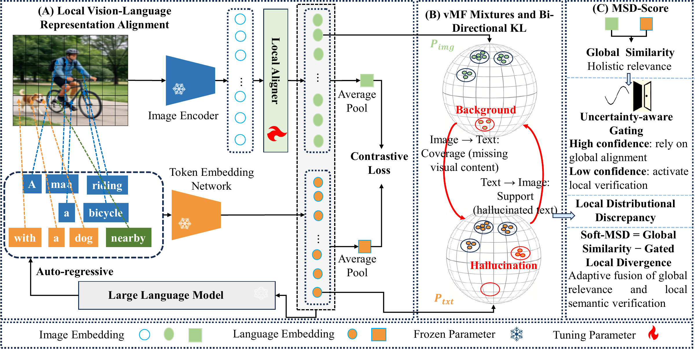
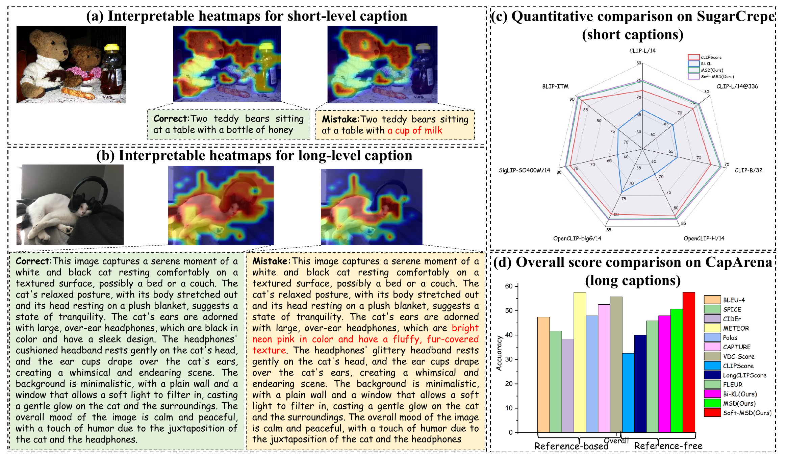
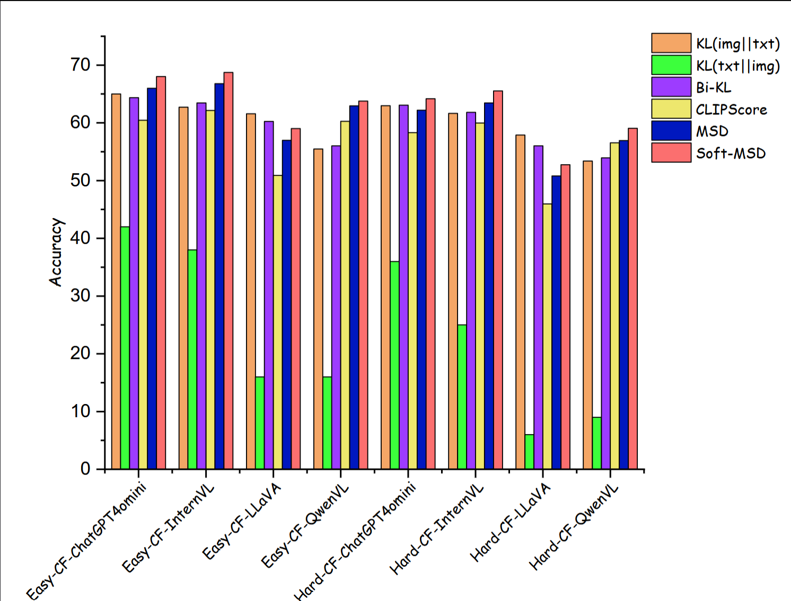
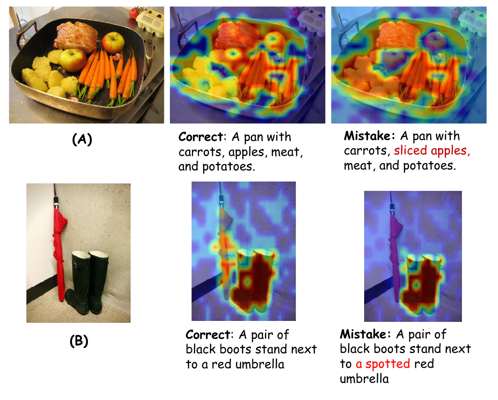
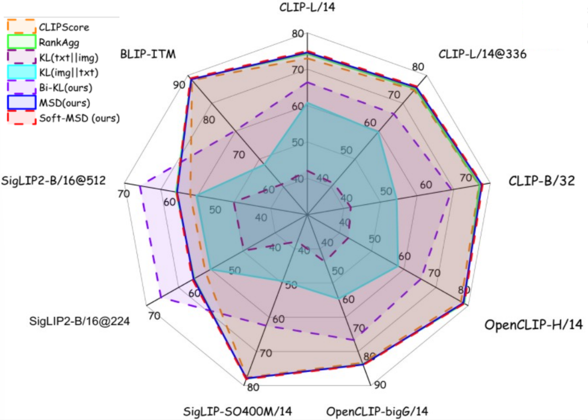

Local representations
Extract normalized image patch embeddings and caption token embeddings instead of collapsing each modality into a single vector.
Reference-Free Image Caption Evaluation
MSD-Score evaluates image captions without references by modeling local visual evidence and textual claims as distributions, then combining fine-grained discrepancy with global image-text similarity.
Abstract
Evaluating image captions without references remains challenging because global embedding similarity often misses fine-grained mismatches such as hallucinated objects, missing attributes, or incorrect relations. MSD-Score models image patches and text tokens as von Mises-Fisher mixtures on the unit hypersphere. A weighted bi-directional KL divergence captures complementary coverage and support failures, while Soft-MSD adaptively combines this local discrepancy with global similarity. The result is a deterministic, decomposable, and reproducible signal for faithful offline caption evaluation.
Method
MSD-Score treats local image patches and caption tokens as structured semantic distributions, enabling explicit measurement of missing visual evidence and unsupported textual claims.
Extract normalized image patch embeddings and caption token embeddings instead of collapsing each modality into a single vector.
Fit fixed-kappa hyperspherical mixtures to model semantic modes in high-dimensional, few-token local embedding sets.
Use image-to-text coverage and text-to-image support divergences to capture omissions and hallucinations.

Results
MSD-Score improves reference-free caption evaluation across human preference benchmarks, fine-grained factual error datasets, and controlled counterfactual stress tests.
caption-level agreement
overall accuracy
pairwise accuracy
pairwise accuracy
mean pairwise accuracy


Diagnostics
The divergence can be decomposed into patch- and token-level contributions, providing diagnostic heatmaps for unsupported details and missing visual evidence.


Repository
Reference-free local distributional scoring with Soft-MSD fusion.
Scripts for controlled and human-aligned caption evaluation.
vMF/GMM comparisons, fixed-kappa analysis, and KL variants.
KL-decomposition heatmaps for grounding error attribution.
Citation
@misc{kan2026msdscore,
title = {MSD-Score: Multi-Scale Distributional Scoring for Reference-Free Image Caption Evaluation},
author = {Kan, Shichao and Zhang, Xuyang and Zhang, Haojie and Zhu, Zhe and Cen, Yigang and Liang, Yixiong and Shan, Lianlei and Zhang, Linna and Qu, Zhe and Xia, Jiazhi},
year = {2026},
eprint = {2605.06080},
archivePrefix = {arXiv},
primaryClass = {cs.CV},
url = {https://arxiv.org/abs/2605.06080}
}